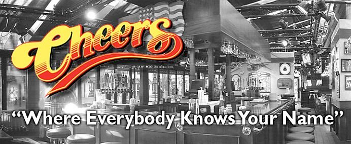

# python code
a = 3
a**29One page holding every construct the book uses, so a theme or CSS change can be checked in one place, in both light and dark mode. This is a good reference page for how source code renders to the page.
You can learn more about features in the Quarto Guide.
Body text, with bold, italic, inline code, a link to another page and an external link. Keyboard keys are written with <kbd>. Named keys take title case: Ctrl, Shift, Tab, Enter, Esc, Space, Up, Down. A letter key stays lowercase unless Shift is genuinely part of the shortcut, so that an uppercase letter never implies a Shift that isn’t there: Ctrl + c interrupts a command, while Ctrl + Shift + C opens the browser console. The same rule reads correctly for a program that treats case as meaning, such as n and N in less. Enough of them to wrap, so their boxes can be checked against each other on neighbouring lines: press Ctrl + c to stop a running command, Ctrl + d to close the shell, Tab to complete a path, Up and Down to walk back through your history, and Ctrl + r to search it.
A blockquote.
Every static listing carries a label saying where its contents belong, and the copy button says whether you are meant to take it: a listing you run or paste has one, a listing showing what the machine said back does not.
| You are looking at | Fence | Label | Copy button |
|---|---|---|---|
| a command to run in the terminal | bash |
automatic | yes |
| what the terminal printed back | out |
automatic | no |
| code in a file, or typed at a console | python, r |
filename |
yes |
| the contents of a file | its own language, or default |
filename |
yes |
bash and out are labelled by code-labels.lua, because those two labels never vary. Everything else says where it belongs with an explicit filename, because that is where a label earns its keep – penguins.py and pyproject.toml tell you something “Python” and “TOML” do not.
A command and what it printed, which is the pairing most of the book is made of. They are two listings, never one, so the command can be copied without dragging the output along with it:
Output
Applications Pictures
Desktop Documents Movies
Downloads MusicA listing that is a file, labelled with the file’s name:
penguins.py
A file with no language of its own. default is the fence for these: no highlighting, but still a copy button, because it is a listing you are meant to put somewhere:
A listing typed at a console rather than saved to a file:
The remaining languages, which reach the page the same way:
# a bare fence: no label, no highlighting, no copy buttonA listing wider than the page, so the horizontal scrollbar can be checked. Real lines in the book reach about 150 characters:
Terminal
Output wide enough to scroll, so the same can be checked on the quieter surface:
Output
cpython-3.14.7-macos-aarch64-none /opt/homebrew/bin/python3.14 -> ../Cellar/python@3.14/3.14.7/bin/python3.14A one-line command and a one-line output, the shortest the pairing gets:
Output
uv 0.12.6A cell and its output:
A cell showing its own fence, which is how the book explains chunk options:
An R cell and its output. The page is pinned to the knitr engine in the front matter, so the Python cells above run through reticulate, which picks up the uv venv from VIRTUAL_ENV when the book is rendered with uv run:
A cell that writes to stderr, which Quarto puts in an output block of its own. This one is R, because under knitr a Python warning arrives on stdout instead:
A cell whose output is a figure:
A note!
A tip!
A warning!
An important!
A caution!
An exercise!
An activity!
Another exercise!
Another activity!
Callouts hold listings too, and Quarto styles those differently from a listing out in the body:
Quizzes are written in a quizdown fence and rendered by _extensions/quizdown, a fork of quizdown-js kept at UBC-MDS/quarto-quizdown-mds-ext. The fence never says which kind of question it holds – the type comes out of the shape of the list you write:
| You write | You get |
|---|---|
an unordered list whose items hold :: |
matching: drag a chip into a slot |
| an ordered list with no checkboxes | sequence: drag the lines into order |
an unordered list of - [ ] and - [x] |
multiple choice: tick every right answer |
an ordered list of 1. [ ] and 1. [x] |
single choice: tick the one right answer |
Three optional pieces work in all four: a --- block of options above the question, a > blockquote under the heading, which becomes a hint behind a button, and a > blockquote indented under one answer, which becomes the feedback shown for that answer once the quiz is marked.
A quiz renders into a shadow root, which is a corner of the page that no stylesheet can reach into from outside. So the colours below do not come from styles.scss like everything else on this page – they come from quizdown-theme.html, which injects one stylesheet into each quiz. That is the thing all four of these are really here to check.
The book only uses the first two types so far. The other two are on this page anyway, because an unused construct is the one that breaks without anyone noticing.
Options, a hint and per-answer feedback, which the other three take the same way. An item with nothing on the left of its :: is a distractor: it joins the pool of chips but matches no prompt.
| Command | Purpose | Example use |
|---|---|---|
pwd |
Print Working Directory | pwd |
ls |
LiSt contents | ls Documents |
cd |
Change Directory | cd Desktop |
Inline math, \(y = mx + b\), and display math:
\[f'(a) = \lim_{x \to a} \frac{f(x) - f(a)}{x-a}\]
